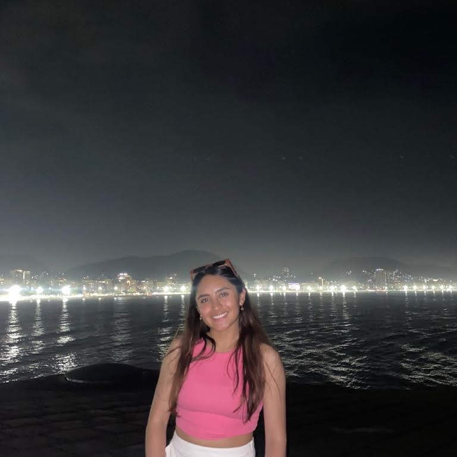

About
Soy Lina María.
Full Stack Developer Jr. creando experiencias digitales desde
Bogotá.
Hay cosas que llegan y desde el primer momento sabes que te van a gustar. Para mí, el desarrollo web fue eso: una mezcla perfecta entre lógica, creatividad y la posibilidad de construir algo que no solo funcione, sino que también se sienta bien al usarlo. Poder transformar ideas en experiencias digitales es algo que me parece profundamente chévere.
Soy Ingeniera Química con un amor creciente por la tecnología. Actualmente me estoy formando como Junior Full Stack Java Developer en el bootcamp de Generation Colombia, donde he descubierto un interés especial por el desarrollo front-end y el análisis de datos. Me encanta entender cómo se estructuran las bases de datos, cómo se conectan los modelos, y cómo todo eso puede traducirse en soluciones útiles y bien pensadas.
Estoy en constante aprendizaje, buscando espacios donde pueda seguir desarrollando mis habilidades técnicas y analíticas. Me motiva trabajar en equipo, comunicarme con claridad y aportar desde la mejora continua. Quiero crecer en entornos que valoren tanto el detalle como la visión general, y donde el código tenga un propósito más allá de lo funcional: que conecte, que resuelva, que inspire.
